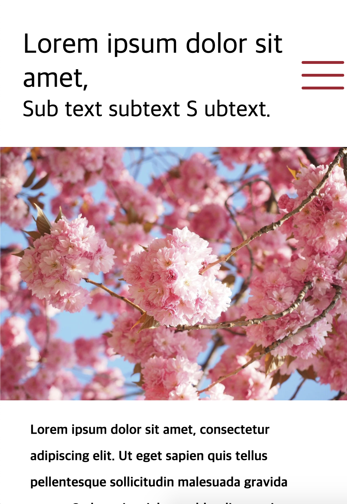

made by this person IF (I === WebPublisher){ doWork(); console.log('priority'); }else if( I === WebDesigner){ doWork(); } Sites SSMEDIPIA 혈액 관련 기업의 이미지에 맞추어 강조색을 채도 낮은 붉은색으로 선택하였음. 공간산업주식회사 색상은 푸른색 계열로. 생산 제품이 많아 최대한 깔끔하게 분류하여 제품을 확인하기 쉽도록 레이아웃을 구성하였음. 파란관세사무소 사무소 법인의 이름에 맞게 파란색으로 색상을 선택함.  Demo1 깔끔하고 화사한 느낌의 샘플 사이트. Demo2 가로 스크롤로 구현한 데모 사이트 (desktop ONLY)